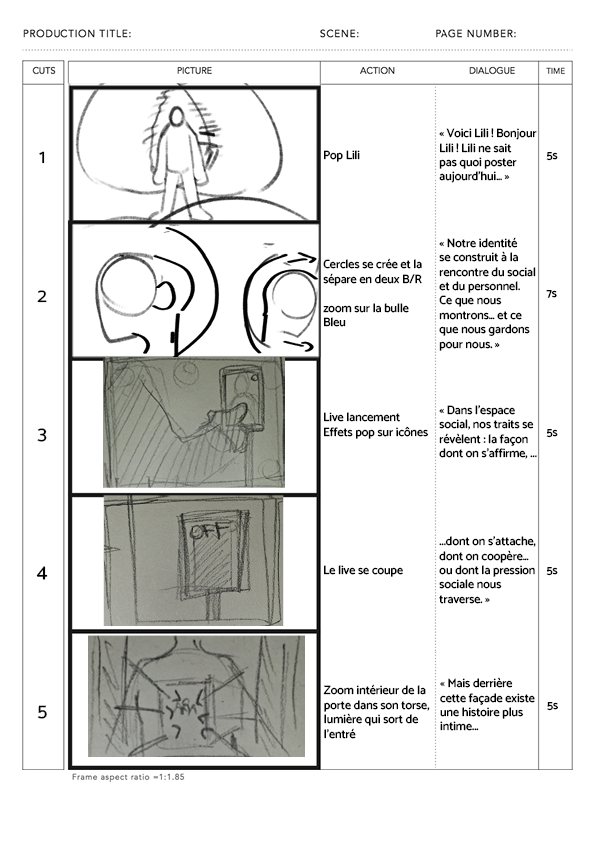
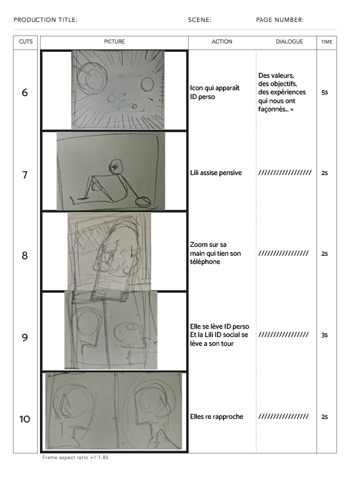
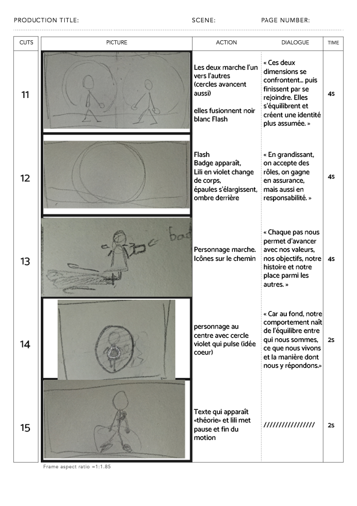

L'essence du projet
Internet Super Média est un projet de vulgarisation théorique réalisé sous forme de motion design. L'objectif était de traduire visuellement une théorie complexe de la psychologie sociale — le modèle interactionniste d'Arnold H. Buss (1986) — et de l'appliquer à un contexte d'actualité : les interactions sur les réseaux sociaux modernes.
La démarche artistique
Pour rendre cette théorie accessible, j'ai privilégié une approche de Data Visualisation animée. J'ai structuré le motion design autour de la dualité Identité Personnelle vs Identité Sociale. Le concept clé est l'interaction « Personnalité × Situation ».
Le Motion Design
Animation & Edit © Jade Barthes & Djust Kabamba | Sound Design © Jade BARTHES
Recherches et Storyboard
La phase de pré-production a été cruciale pour synthétiser les concepts de Buss. Voici les planches de storyboard qui ont servi de base à l'animation finale, permettant de définir le rythme et la hiérarchie visuelle des informations.

Storyboard / Phase 1
Storyboard / Phase 2
Storyboard / Phase 3Analyse Théorique Applicative
Le motion design illustre comment, face à une situation sociale numérique (ex: un live), l'interaction entre nos traits individuels (dominance, anxiété sociale) et le contexte (recherche de "likes", visibilité public vs privé) explique la diversité des comportements en ligne.
Supports Finalisés
Ce projet a été finalisé sous forme d'une vidéo motion design de vulgarisation d'environ une minute, accompagnée de ses planches de recherches graphiques.